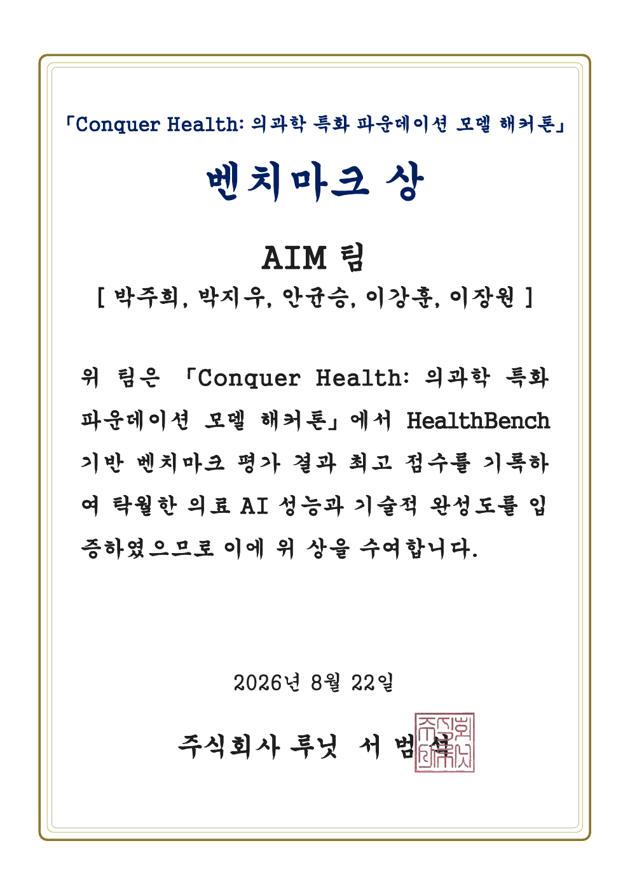

Conquer Health
MCP로 찾은 근거가 답변까지 이어지는지 확인하고, 실험의 작은 점수 차이도 다시 검증했습니다.
근거 조회부터,
완결된 답변까지.
- 01의료 질문
- 02필요한 근거 조회
- 03본문을 생성 입력에 전달
- 04답변의 근거·완결성 검수
HealthBench 벤치마크 1위
프로젝트 한눈에 보기
루닛 의료 AI 해커톤 / AIM 팀 5인
- 직접 담당
- MCP 문서 조회·본문 전달, 초기 안전 게이트, 출력 예산 실험
- 최종 평가
- 14개 팀 중 1위 · 벤치마크상
- 팀 평균
- 46.51점 · 최종 3라운드
- 개선 범위
- 제공 모델의 응답 흐름 · 가중치 변경 없음
- 사용 기술
- PythonFastAPIMCPL2-preview
배경과 역할
문서를 찾는 것에서, 답변의 근거로 쓰이게 하는 것까지.
제공된 L2-preview의 가중치를 바꾸지 않고 의료 질의응답을 개선하는 과제였습니다. 문서를 조회해도 필요한 본문이 생성 입력에 전달되지 않거나, 질문의 요구가 답변에서 누락되면 도구 호출의 성공만으로는 충분하지 않았습니다.
저는 초기 MCP 검색·생성 연결과 약물 안전 게이트를 구현하고, 검색 본문이 모델 입력에 포함되는지와 답변이 질문의 요구·근거를 반영하는지를 나누어 검수했습니다. 이후 출력 예산 실험과 멀티턴 응답 지시 보강에도 참여했습니다. 팀의 최종 제출안과 개인 구현 범위는 커밋 단위로 구분했습니다.
직접 구현한 부분
검색 성공과, 근거를 사용하는 답변 사이의 빈틈을 확인했습니다.
Python·FastAPI 기반 MCP 조회 흐름에서 문서를 찾는 단계와 본문을 생성 입력으로 넘기는 단계를 연결했습니다. 도구 반환만 확인하지 않고 검색 누락·중복, 실제 전달 본문, 근거 없는 인용과 질문 요구의 누락을 나누어 살폈습니다.
- 조회 연결
MCP 문서 조회·초기 안전 게이트 구현
- 입력 확인
검색 본문이 생성 입력에 포함되는지 검수
- 답변 확인
질문의 요구·근거·응답 완결성 확인
개인 실험
출력 예산을 늘렸지만, 점수 개선이라고 단정하지 않았습니다.
출력 상한을 다시 확인하고, 제 후보 e6de327에서 서버 상한 설정을 2,048에서 32,768로 정정하면서 요청 출력 예산은 2,048에서 4,096토큰으로 늘렸습니다. 추론 중 잘림으로 재생성 경로에 들어가는 일을 줄이려는 실험이었습니다. 서버 상한과 실제 요청 예산은 서로 다른 설정입니다.
장부상 이 후보는 49.59점으로, 기준선 반복 3회의 평균 49.18점과 0.41점 차이였습니다. 관측된 반복 변동 안에 있어 토큰 상향만의 개선 근거로 삼지 않았습니다. 점수와 함께 잘림, 폴백 발생, 지연을 확인할 필요가 있었습니다.
팀의 선택과 범위
도구를 항상 쓰기보다, 필요한 질문에 제한했습니다.
팀은 직접 생성의 기준선을 먼저 확인한 뒤, 한국어 약가·허가·성분·질병 코드처럼 정확한 조회가 필요한 질문에 MCP를 제한하는 방향을 검토했습니다. 조회 실패나 모호한 대상에는 직접 생성 경로를 유지하고, 긴 답변이 후처리에서 잘리지 않도록 개선했습니다.
이는 팀의 최종 제출 계열에 대한 설명입니다. 제 기여인 초기 연결·본문 전달·안전 게이트와 출력 예산 실험은 커밋으로 구분했습니다. 선택적 MCP의 실행 빈도나 최종 점수 기여도는 별도의 호출 로그 없이는 단정하지 않습니다.
결과와 수상
벤치마크 1위. 팀 성과와 실험 점수는 구분합니다.
AIM 팀은 루닛 Conquer Health의 HealthBench 기반 최종 평가에서 14개 팀 중 1위로 벤치마크상을 받았습니다. 최종 3라운드 평균은 46.51점입니다. 이는 팀 공동 성과이며 MCP나 출력 예산 하나의 효과로 해석하지 않습니다.
| 평가 | 점수 |
|---|---|
| Round 1 | 46.17 |
| Round 2 | 45.55 |
| Round 3 | 47.82 |
| 평균 | 46.51 |
개발 대시보드 점수와 다른 이유
개발 장부의 54.37점과 마감 대시보드의 53.53점은 최종 3라운드 평가와 별도 기록입니다. 모델 서버 상태와 누적 변경이 함께 달라진 실험도 있어, 서로 다른 기록을 단일 개선율로 계산하지 않았습니다. 상장은 수상 증빙이며 숫자 점수를 기재하지 않습니다.

배운 점
좋아 보이는 점수보다, 다시 확인할 수 있는 변화.
같은 동작을 반복 평가해도 47.79–50.03으로 2.24점 차이가 났습니다. 제 출력 예산 후보의 기준선 평균 대비 +0.41점은 이 변동 안에 있어 개선이라고 단정하지 않았습니다. 잘림·재생성·지연과 답변 완결성을 함께 확인해야 한다는 기준을 세웠습니다.
도구를 붙이는 것보다 중요한 것은 필요한 정보가 실제 답변까지 이어지는지, 그리고 변화가 반복해서 관측되는지였습니다. 이후 실험에서도 설정·관측·해석을 따로 남기고 있습니다.
코드와 근거
구현과 판단의 근거를 함께 남깁니다.
Python / FastAPI / MCP / L2-preview / Docker
2026.11.03 검토 · 개인 기여와 팀 성과, 완료한 실험과 진행 중인 연구를 구분했습니다.